JapanAPIs: Access Japanese Data via Public APIs and Curated Datasets
Source:vignettes/JapanAPIs_vignette.Rmd
JapanAPIs_vignette.Rmd
library(JapanAPIs)
library(ggplot2)
library(dplyr)
#>
#> Attaching package: 'dplyr'
#> The following objects are masked from 'package:stats':
#>
#> filter, lag
#> The following objects are masked from 'package:base':
#>
#> intersect, setdiff, setequal, unionIntroduction
The JapanAPIs package provides a unified interface to
access open data from the World Bank API,
Nager.Date API, and the REST Countries
API, with a focus on Japan. It allows users to
retrieve up-to-date or historical information on topics such as economic
indicators, population statistics, national holidays, and basic
geopolitical details.
In addition to API-access functions, the package includes one of the largest curated collections of open datasets related to Japan. These datasets cover a wide range of topics including natural disasters, economic production, the vehicle industry, air quality, demographic trends, and administrative divisions.
JapanAPIs is designed to support users working with data
related to Japan by integrating international RESTful
APIs with structured and reliable datasets from public, academic, and
governmental sources into a single, easy-to-use R package.
Functions for JapanAPIs
The JapanAPIs package provides several core functions to
access real-time and structured information about Japan
from public APIs such as the World Bank API,
Nager.Date, and the REST Countries
API.
Below is a list of the main functions included in the package:
get_japan_child_mortality(): Get Under-5 Mortality Rate in Japan from World Bankget_japan_cpi(): Get Japan’s Consumer Price Index from World Bankget_japan_energy_use(): Get Japan’s Energy Use (kg of oil equivalent per capita) from World Bankget_japan_gdp(): Get Japan’s GDP (Current US$) from World Bankget_japan_holidays(): Get official public holidays in Japan for a given year, e.g. get_japan_holidays(2025)get_japan_hospital_beds(): Get Hospital Beds per 1,000 People in Japan from World Bankget_japan_life_expectancy(): Get Japan’s Life Expectancy at Birth from World Bankget_japan_literacy_rate(): Get Japan’s Literacy Rate (Age 15+) from World Bankget_japan_population(): Get Japan’s Total Population from World Bankget_japan_unemployment(): Get Japan’s Unemployment Rate from World Bankget_country_info_jp(): Get Key Country Information About Japan from the REST Countries APIview_datasets_JapanAPIs(): View Available Datasets in JapanAPIs
These functions allow users to access high-quality and structured
information on Japan, which can be combined with tools
like dplyr and ggplot2 to support a
wide range of data analysis, visualization, and research tasks. In the
following sections, you’ll find examples on how to work with
JapanAPIs in practical scenarios.
Japan’s GDP (Current US$) from World Bank 2022 - 2017
japan_gdp <- head(get_japan_gdp())
print(japan_gdp)
#> # A tibble: 6 × 5
#> indicator country year value value_label
#> <chr> <chr> <int> <dbl> <chr>
#> 1 GDP (current US$) Japan 2022 4.26e12 4,262,463,317,797
#> 2 GDP (current US$) Japan 2021 5.04e12 5,039,148,168,861
#> 3 GDP (current US$) Japan 2020 5.05e12 5,054,068,005,376
#> 4 GDP (current US$) Japan 2019 5.12e12 5,117,993,853,017
#> 5 GDP (current US$) Japan 2018 5.04e12 5,040,880,939,325
#> 6 GDP (current US$) Japan 2017 4.93e12 4,930,837,369,151Japan’s Life Expectancy at Birth from World Bank 2022 - 2017
japan_life_expectancy <- head(get_japan_life_expectancy())
print(japan_life_expectancy)
#> # A tibble: 6 × 4
#> indicator country year value
#> <chr> <chr> <int> <dbl>
#> 1 Life expectancy at birth, total (years) Japan 2022 84.0
#> 2 Life expectancy at birth, total (years) Japan 2021 84.4
#> 3 Life expectancy at birth, total (years) Japan 2020 84.6
#> 4 Life expectancy at birth, total (years) Japan 2019 84.4
#> 5 Life expectancy at birth, total (years) Japan 2018 84.2
#> 6 Life expectancy at birth, total (years) Japan 2017 84.1Japan’s Total Population from World Bank 2022 - 2017
japan_population <- head(get_japan_population())
print(japan_population)
#> # A tibble: 6 × 5
#> indicator country year value value_label
#> <chr> <chr> <int> <int> <chr>
#> 1 Population, total Japan 2022 125124989 125,124,989
#> 2 Population, total Japan 2021 125681593 125,681,593
#> 3 Population, total Japan 2020 126261000 126,261,000
#> 4 Population, total Japan 2019 126633000 126,633,000
#> 5 Population, total Japan 2018 126811000 126,811,000
#> 6 Population, total Japan 2017 126972000 126,972,000Japan Vehicle Production (1947–1989)
# Convert time series to a tibble
jpn_vehicle_prod_df <- tibble(
year = as.numeric(time(jpn_vehicle_prod_ts)),
production = as.numeric(jpn_vehicle_prod_ts)
)
# Plot the time series
jpn_vehicle_prod_df %>%
ggplot(aes(x = year, y = production)) +
geom_line(color = "steelblue", size = 1) +
labs(
title = "Japan Vehicle Production (1947–1989)",
x = "Year",
y = "Vehicles Produced (in thousands)"
) +
theme_minimal()
Dataset Suffixes
Each dataset in JapanAPIs is labeled with a
suffix to indicate its structure and type:
_df: A standard data frame._tbl_df: A tibble data frame object._ts: A time series object._vec: A numeric vector object.
Datasets Included in JapanAPIs
In addition to API access functions, JapanAPIs offers
one of the largest curated collections of open datasets focused on
Japan. These preloaded datasets cover a wide range of
topics including demography, natural disasters, public health, sports,
centenarians, atomic bomb survivors, earthquakes, and administrative
data. Below are some featured examples:
jpn_usd_exchange_df: A Data frame containing weekly observations of the yen-dollar exchange rate from 1975 to 1989.jpn_prefectures_tbl_df: A tibble representing Japan’s 47 prefectures arranged in a 7x7 grid layout.kobe_quake_1995_ts: A time series containing data related to the 1995 Kobe earthquake.
Conclusion
The JapanAPIs package offers a unified interface for
accessing both real-time data from public APIs and a rich collection of
curated datasets about Japan. Covering a wide spectrum
of topics from economic indicators, holidays, and demographic statistics
via international APIs, to detailed datasets on natural disasters,
public health, automotive production, administrative divisions, and more
JapanAPIs provides users with reliable, structured, and
high-quality data.
Unlike tools that focus exclusively on API access,
JapanAPIs includes one of the most comprehensive
collections of preloaded open datasets related to
Japan, including information on centenarians,
earthquake records, atomic bomb survivors, and detailed regional
statistics. This enables deeper exploration of Japan’s
historical, social, and economic landscape.
Designed to support reproducible research, education, and data journalism, the package empowers users to analyze and visualize Japan-focused data directly within R, using tidy formats and well-documented sources.